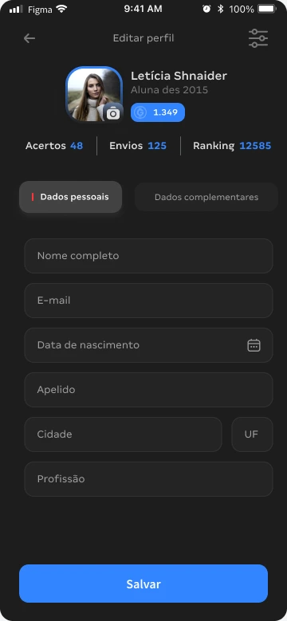
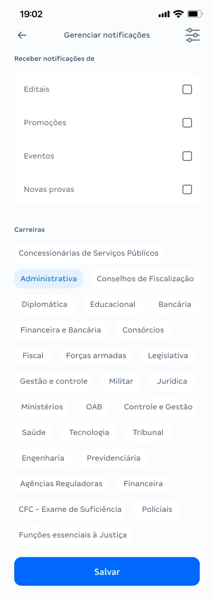

REDESIGN COMPLETO DE UX/UI
Clareza para usar.
Uma nova forma
de se apresentar.
Redesenhar a área Minha Conta para oferecer uma experiência mais clara e limpa, com novos componentes, cores e ícones.
O essencial
em primeiro plano.
Perfil, preferências e configurações organizados em uma nova composição de interface.
Explore as versões originais do projeto.
Repensar a experiência.
Reconstruir o visual.
O objetivo do redesign foi tornar a experiência do usuário mais clara e limpa, sem abrir mão do cuidado visual. A proposta envolveu uma reformulação completa: novos componentes, cores e ícones, além da organização das informações e dos fluxos da área Minha Conta.
O trabalho apresentado concentra-se na solução de UX/UI. Esta apresentação não atribui ao projeto métricas de resultado ou validações que não foram fornecidas.
Organizar
para encontrar.
Agrupamentos separam perfil, aparência e preferências. Títulos de seção e descrições curtas ajudam a reconhecer a finalidade das opções.
Construir uma
nova linguagem.
Cartões, campos, botões, ícones e estados de seleção compõem uma nova expressão visual para a área Minha Conta.
Adaptar sem
perder coerência.
As versões clara e escura mantêm a organização dos conteúdos e os padrões de interação, com ajustes de superfície e contraste.

Campos reunidos em uma tela de edição, com ação de salvar em destaque.

Preferências de comunicação e seleção de interesses apresentadas em grupos.
Uma conta.
Várias necessidades.
A área reúne identidade do aluno, informações do plano, edição de perfil, aparência, resposta rápida, opção de biometria e encerramento de sessão. No arquivo também aparecem fluxos de acesso, cadastro, notificações e exclusão da conta.
O recorte deste case enfatiza Minha Conta e suas configurações. As telas mostram a proposta de interface; a alternância acima permite comparar suas apresentações clara e escura.
Explorar o projeto no Figma ↗